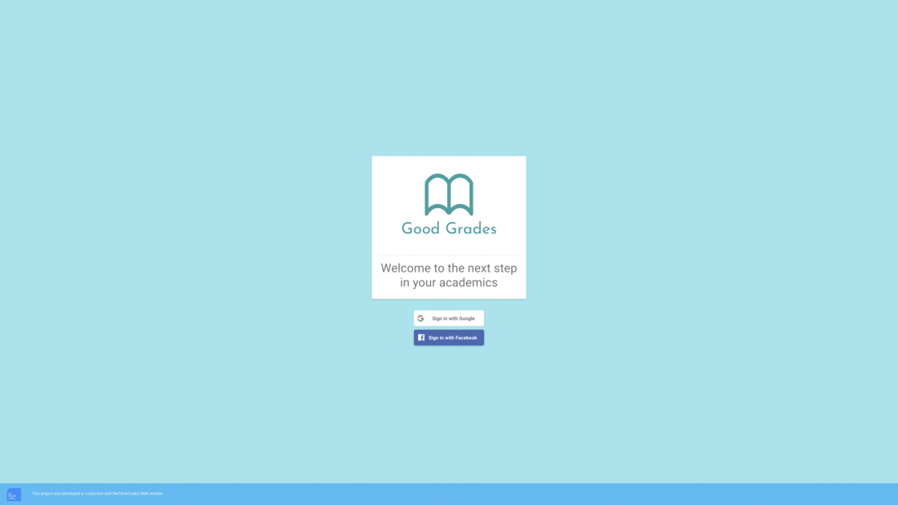

Good Grades (SME Project)
Stack and Tools used in this project
- NodeJS
- React
- MongoDB
- CircleCI
- Heroku
- Trello
Summary A 6 week team project dedicated to replicating a real life development process, which in our case, resulted in a PWA (Progressive Web App).
Geek Out This project was carried out by 3 students of WeThinkCode_ Cape Town, myself included. We had a product owner who posed a problem to us, which was being able to match up students in need of assistance to available tutors, and a mentor to help guide us throughout the development process.
This project consisted of 3 sprints with a time period of 2 weeks each, whereby we'd focus on the features we identified as being necessary for our MVP (Minimum Viable Product). Our core features for MVP was connecting a tutor and student to a workspace for online tutoring, a scheduler to help navigate sessions between tutors and students and a notification system to notify both tutors and students of their booked sessions.